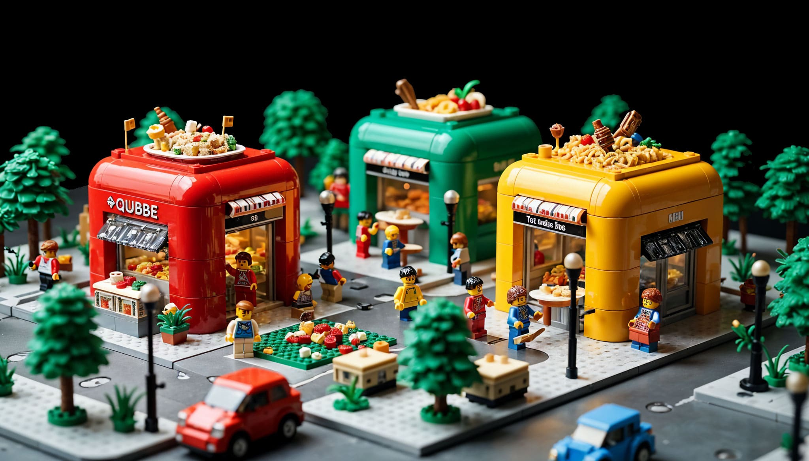
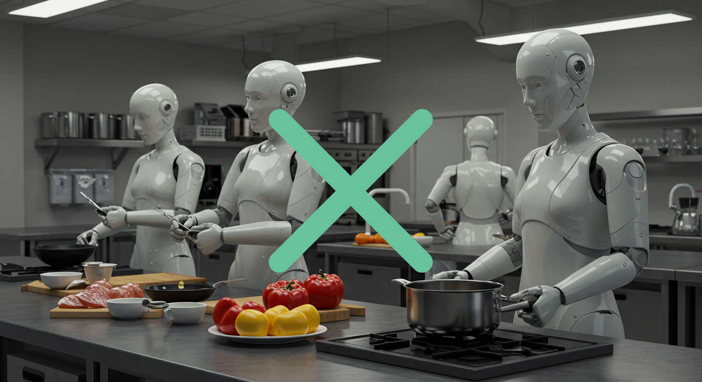
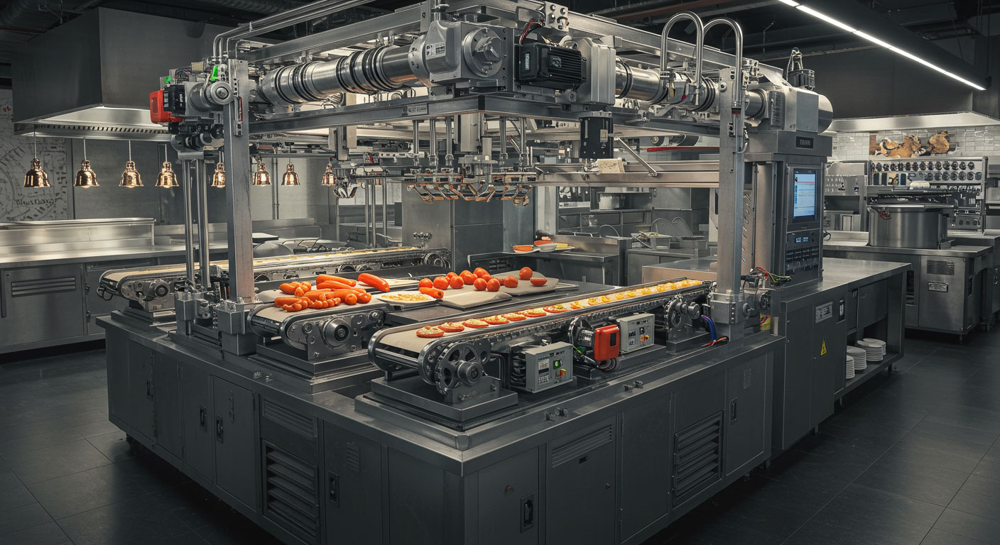
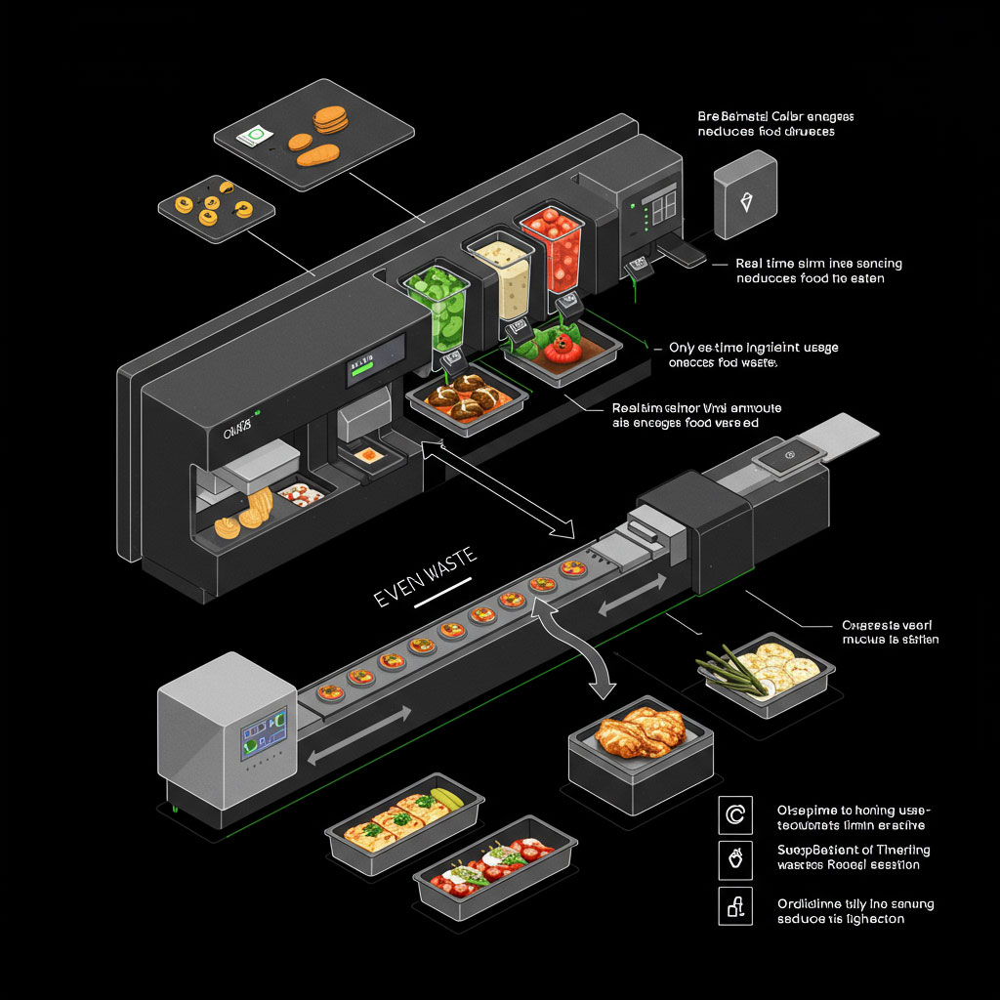
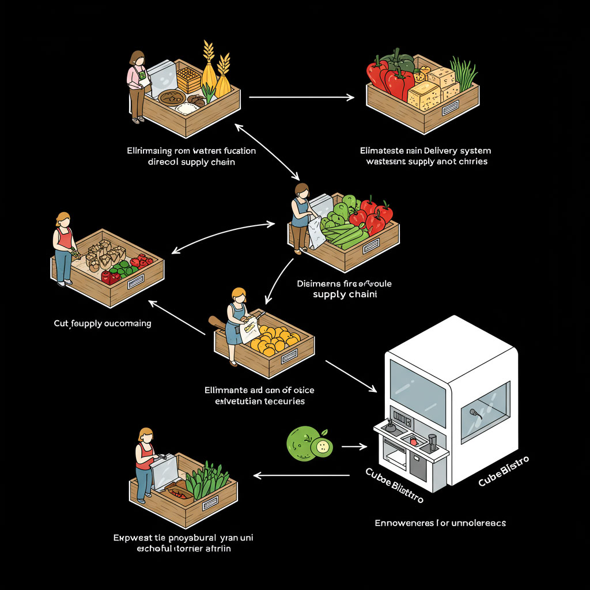
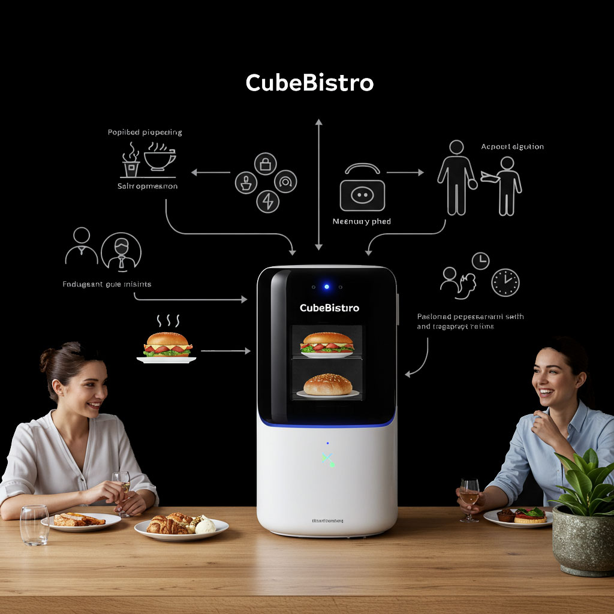
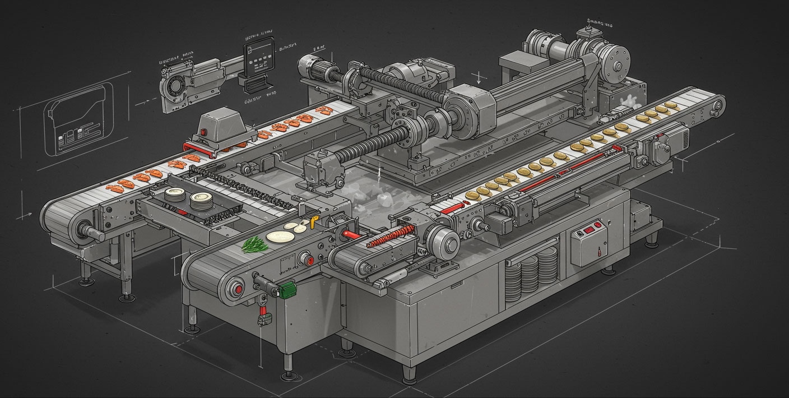

CubeBistro is a revolutionary robotic restaurant designed to provide fresh meals with minimal waste. Our compact and automated CubeBistro ensure a modern, eco-friendly dining experience directly from farm to table. With direct ingredient delivery and smart automation, CubeBistro redefines the way we enjoy food.


The Cube is where the magic happens. With its automated lock boxes for storing hot and cold meals, customers can enjoy a seamless, staff-free experience. Order via the app, and your meal is ready for pick-up in no time!

Our robots take care of the preparation and delivery of your food, while a smart algorithm ensures the perfect portion and temperature. It's dining with zero hassle.
The CubeBistro Restaurant is not just a futuristic food printer; it's a game-changer for the entire food industry. By eliminating traditional supply chains and reducing food waste, the CubeBistro is leading a new wave of sustainable dining.

The CubeBistro's automated system ensures that every ingredient is used precisely when needed, minimizing food waste. With no overstocking and real-time ingredient usage, we reduce the environmental footprint associated with food production and distribution.

Say goodbye to the complex and wasteful supply chains. With our direct delivery system, ingredients arrive in a streamlined, efficient manner, cutting out unnecessary intermediaries. This change not only helps the environment but also empowers local farmers, reducing dependency on large-scale distributors.

The CubeBistro doesn’t just change how we eat—it transforms how we interact. As it automates the process, we free up time to spend on meaningful activities. No more waiting in long lines or wasting time on daily grocery runs. Our dining experience becomes quicker, simpler, and more enjoyable, freeing us to live in the moment.
The CubeBistro allows you to customize your meals according to your dietary preferences and health goals. Whether you're looking for high-protein, low-carb, or plant-based options, the CubeBistro can adapt to your needs, ensuring you always get the food that's right for you.
The CubeBistro allows you to customize your meals according to your dietary preferences and health goals. Whether you're looking for high-protein, low-carb, or plant-based options, the CubeBistro can adapt to your needs, ensuring you always get the food that's right for you.

At CubeBistro, we're not just creating a restaurant. We're reshaping the way we think about food, convenience, and sustainability. Imagine a world where technology and culinary artistry merge seamlessly, providing an experience that's faster, more efficient, and aligned with the future of dining.
Welcome to the CubeBistro Robotic Restaurant, where the future of food meets innovation. Here, every meal is crafted with precision, served with convenience, and delivered through an entirely new approach to dining.
In today's fast-paced world, convenience often compromises quality. We're here to change that. CubeBistro is a fully automated, staff-less bistro that brings together advanced robotics and smart technology to provide fresh, personalized meals at your fingertips. Whether you're at home, in an office, or on the go, CubeBistro ensures that great food is just a tap away.
CubeBistro is built on one simple idea: simplicity in every bite. Our robotic kitchen inside a sleek, compact CubeBistro ensures that every meal is prepared and delivered with maximum efficiency. Let's take a look at what makes CubeBistro unique:
CubeBistro is not just a restaurant; it’s a movement. We're creating a world where technology enhances the quality of life and the way we experience food. With every meal we serve, we’re building a future that’s more sustainable, more convenient, and more connected.
By eliminating traditional supply chains and human labor, CubeBistro minimizes waste and operational costs, allowing us to pass on savings to our customers while reducing our environmental impact.
The future of dining is no longer confined to traditional spaces or methods. It’s mobile, efficient, and at the touch of a button.
Ready to experience the future of dining? Whether you're in the heart of the city or at the office, CubeBistro is here to bring you fresh, delicious meals with unmatched convenience. Order, enjoy, and feel good about your choices.
Welcome to CubeBistro — where innovation and food come together.